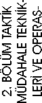

A. TEMEL EĞİTİM KURSU
A.1. HEDEFLER
1. Silahı, doğru, yerinde ve etkili kullanma, 2. Gelişen ani olaylara karşı hızlı ve doğru karar verebilme ve müdahale edebilme,
3. Kapalı ve açık alanlara yapılan operasyonlarda etkin rol alabilme, 4. Ekip içinde sorumluluk alabilme ve ekip ile uyumlu çalışabilme.
A.2. HEDEF ve DAVRANIŞLAR
1. Silahı, doğru, yerinde ve etkili kullanma, 1.1. Silahı doğru kavrama,
1.2. Doğru nişan alma,
1.3. Doğru tetik çekme.
1.4. Sivil ve resmi kıyafetten silahı kısa sürede çekerek atışa hazır hâle Getirme,
1.5. Her türlü yön ve pozisyonlarda silahı etkin kullanma.
2. Gelişen ani olaylara karşı hızlı ve doğru karar verebilme ve müdahale edebilme,
2.1. Bir noktada dururken her yönden gelebilecek ani hedeflere atış
yapma,
2.2. Hareket hâlindeyken her yönden çıkabilecek ani hedeflere atış
yapma,
2.3. Koşarken veya yürürken çıkabilecek ani hedeflere durarak atış
yapma,
2.4. Koridor ve sokak gibi mekânlarda değişik mesafelerden çıkabilecek hedefleri vurma, 2.5. Makineli tabancanın fişeğinin bitmesi veya tutukluk yapması durumunda, hızlı bir şekilde yarı otomatik tabancaya geçiş yapma, 2.6. Yarı otomatik tabancanın veya MP5Makinalı tabancanın tutukluk yapması durumunda hızlı bir şekilde arızayı giderme, 2.7. Yarı otomatik tabancanın veya MP5 Makinalı tabancanın fişeğinin bitmesi durumunda hızlı bir şekilde şarjörü değiştirme, 3. Kapalı ve açık alanlara yapılan operasyonlarda etkin rol alabilme, 3.1. Kalabalık ortamın içinde çıkan bir hedefi hızlı bir şekilde algılama.
3.2. Algılanan hedef hakkında ani karar verme ve hedefi etkisiz hale getirme.
3.3. Sütre gerisinden kapalı/açık alanda etkili bir şeklide atış yapma.
4. Ekip içinde sorumluluk alabilme ve ekiple uyumlu çalışabilme.
4.1. Taktik müdahalelerde ekip ruhuna uygun hareket etme.
4.2. Taktik müdahale tekniklerine uygun operasyon yapma,

HEDEFLER, HEDEF ve DAVRANIŞLAR,
ÖĞRENME - ÖĞRETME STRATEJİLERİ, DEĞERLENDİRME STRATEJİLERİ